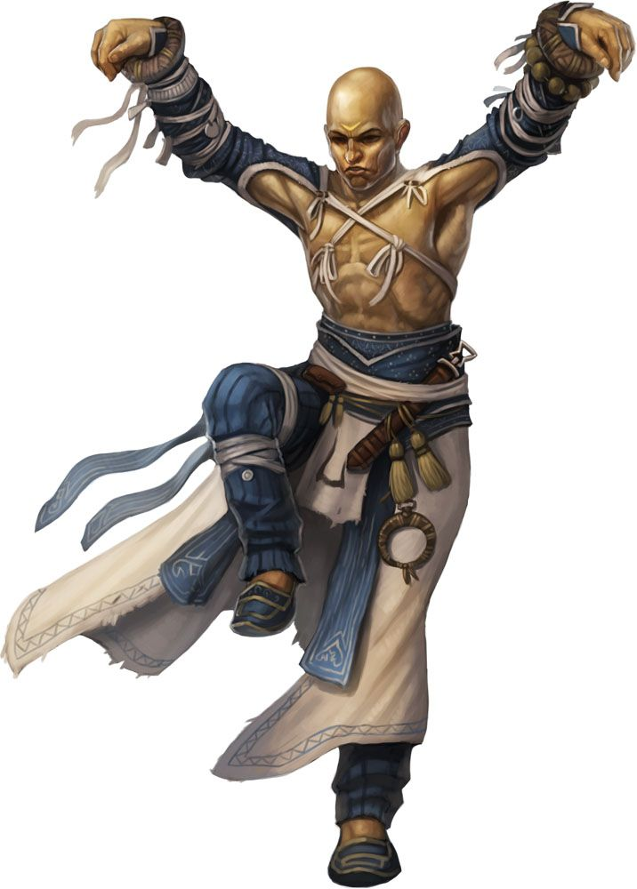
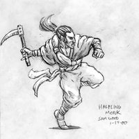
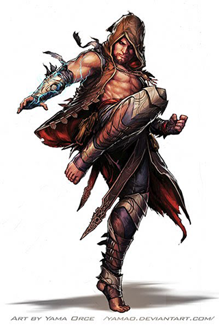
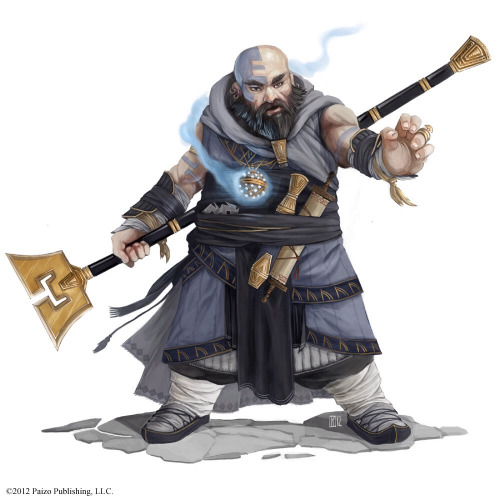
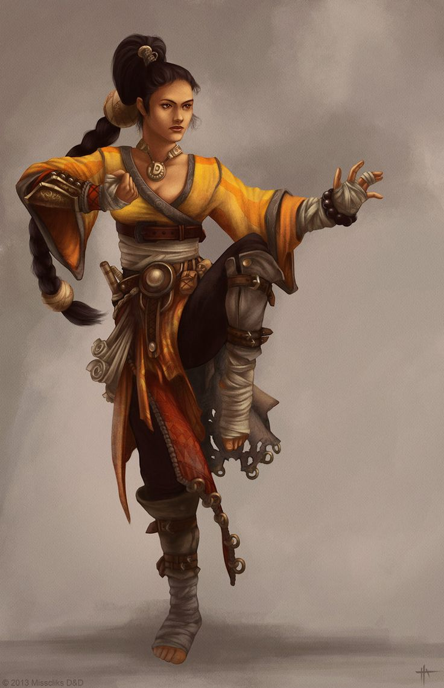
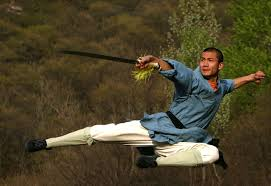
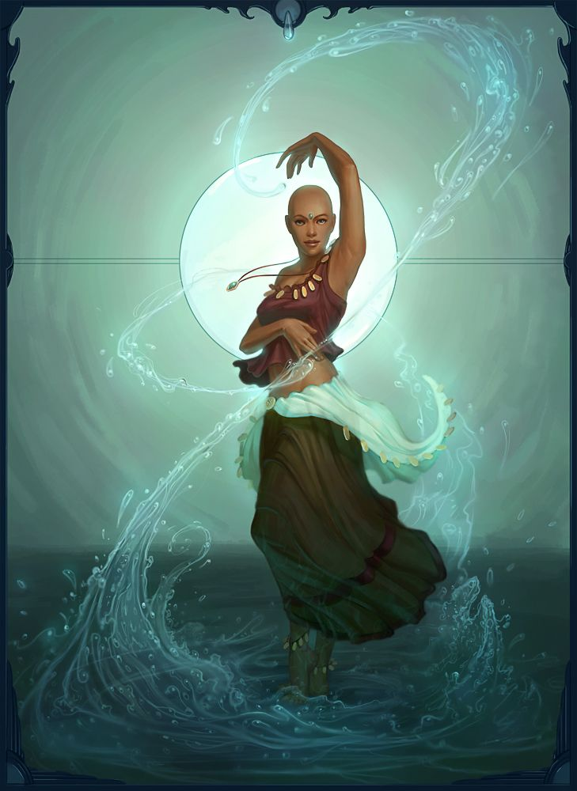

The Beginner’s Basics To The NEW Master of Many Styles
(as written by JAMRenaissance)

What This Guide Is (and Is Not)
Analysis of the Master of Many Styles
Sample Feat Distributions
The Question Of Race and Weaponry
Style Ratings
Style Synergies/Shared Requirements
Appendix A: To-Hit/CMB tables
What This Guide Is (and Is Not)
The Master of Many Styles (MoMS), post-Ultimate Combat errata is a much different animal than the Supreme Dip archetype that it was previously. This guide is an attempt to make things a bit simpler, explaining the archetype in detail with examples of Feat selection. It also attempts to do some of the research legwork for you, giving overall analysis of the Styles available in Pathfinder and identifying areas of synergy between the Styles. Everything in this guide is viewed through the lens of the Master of Many Styles Monk
As a result, one should not look at this as a Styles Guide. Though this analysis would certainly be helpful, the MoMS is a unique and complex enough animal on its own, and comprehensive rating of the styles often clashes with the ratings of the styles in MoMS context. As an example, any of the styles that rely on brawler’s flurry or flurry of blows, such as Jabbing Style and Pummeling Style, would be rated higher for a Brawler or non-MoMS monk. They are not as highly rated (though still highly rated) for a MoMS because she loses her flurry ability.
This is also not an Optimization Guide. The goal of this guide is to take a highly complex archetype and make it easier to use to create Non-Crappy Monks. Paizo has given the Monk tons and tons of tools over the years because Oh-Dear-God-The-Monk-Needed-It, so the creation of a Non-Crappy Monk requires a large amount of System Mastery. This Guide seeks to reduce the amount of System Mastery needed, and a true Optimization Guide runs counter to that goal.
Finally, this is not a Comprehensive Look At The Master Of Many Styles Monk. The amount of material analyzed will be limited to the “Extended Core” Pathfinder line and the Styles (and Styles alone) given in Blood of Angels, Blood Of The Moon, Dirty Tactics Toolbox, Kobolds of Golarion, Melee Tactics Toolbox and Weapon Master’s Handbook. The exception to this is the Advanced Race Guide, in that only the Core races will be analyzed.
This Guide uses the TreantMonk style of rating:
Blue is a superior option that should always be taken as the first choice.
Green is a strong option that may not be as comprehensive, but is still a great pick.
Orange is an average option. Consider this the baseline.
Red is an inferior option that you should avoid.
Analysis Of The Master Of Many Styles
As before, the Bonus Feats, Flurry of Blows, and Perfect Self class abilities of the Monk are replaced with the ability to take as Bonus Feats Style Feats from a chain without prerequisites, or (from Level 6 onward) a Wildcard Feat that works operationally like Martial Flexibility for your Style. This means you can replace the Wildcard Feat with any Feat in the chain for which you meet the prerequisites. As you rise in level, you will be able to meet more prerequisites and have more options with your Wildcard feats.
With that in mind, most of the analysis of what is good for a Monk is good for a MoMS Monk. There are several great general guides out there, such as TreantMonk’s Guide To Monks and A Comprehensive Guide To The Monk by Revel. With that in mind, here are some of the differences between a standard Monk and a Master of Many Styles to keep in mind.
You are more likely to hit but you will hit less times.
Appendix A contains a comparative look at the BAB and CMB of a MoMS and a variety of other classes. Based on this data, a MoMS will have a better to-hit than a typical Monk due to the bonus she receives for each Style she has in use. There is almost no downside in investing in many Styles other than having to spend the resources to get the Styles, so this Guide assumes you are maximizing the number of Styles you have at play. At specific levels (5th-7th) there is no difference, but at 8th level the difference jumps to +3 and never catches back up again.
On the other hand, the Monk will have considerably more attacks than the MoMS, and the gap in to-hit will disappear as the iteratives add up. At Level 11, a MoMS is +11/+6, while a Monk’s Flurry is +9/+9+/+4/+4/-1. Many of these will not connect (hence the frequent nickname “Flurry of Misses”), but more will connect on average than the MoMS. Also note that certain Styles, such as Pummeling Style and Boar Style, work better with a higher capacity for more hits.
Some of this discrepancy can be mitigated via your Style choices. Several Feats in Style chains give free actions. The following are Feats in Style Chains that give totally free actions in different circumstances.
- Boar Ferocity: Free Intimidate on a Flash Tear
- Cudgeler Sweep: Free Trip on a Charge Attack
- Orc Fury Style/Rampage: -2 to your first attack/nothing to get a Free Intimidate to demoralize if the first attack hits
- Panther Claw: Free retaliatory attack WIS/rd when someone attempts an AoO on you due to movement
- Pummeling Bully: Free Trip or Reposition if you hit within a full attack
- Slipslinger Bombardment: Free loading of a sling with alchemical weapons
- Smashing Style: Free Improved Bull Rush or Improved Trip on a successful Sunder using the Sunder attack stats.
- Wolf Style: Free Trip if you reduce an opponent’s movement to 0 via attack of opportunity

Ratings given are for the individual Feats, not the chain.
You are the Maneuver Master (other than the Maneuver Master)
Whereas it’s questionable whether or not the bonus to attack given to the MoMS balances out the number of attacks in a Flurry, one thing that is certain is that the MoMS will hit more often with maneuvers once the level eight attack bonus kicks in. Once again referencing Appendix A, MoMS gains a +3 advantage starting at level eight and it never shrinks from there.
You may also note that the list of free actions above includes a number of maneuvers. This synergizes well with your ability to hit them.
You WILL be Feat Starved
You always want to have at least two Styles available to you from levels 1 through 7, three from levels 8 - 14, four from levels 15 through 19, and five at level 20. This is simply to maximize the power of your Fused Styles and bonus to attack from using Styles. There is almost nothing to lose and everything to gain from possessing multiple Styles.
The only thing “lost”, however, will be opportunity. Every Feat in a Style chain that you invest into MoMS is a Feat that you couldn’t spend someplace else. The fact that you must meet the prerequisites of a Feat to use it as a Wildcard Slot is huge; it means you have to be willing to put in the investment ahead of time. For the purposes of this discussion, attribute and skill requirements are considered negligible. With the exception of the rare INT or Knowledge(Nature) (looking at you, Wolf Style!), most of these requirements are already in your best interests and/or things you would have done anyway. Monks are given enough Skill ranks per level to make this a non-issue.
The Feat investments, however, can be substantial. Pummeling Bully requires Improved Reposition and Improved Trip. However, to get either of those, one needs Combat Expertise or Dirty Fighting. The single Feat in the Style Chain actually requires a four Feat investment.
With that in mind, here are the Style chains that require no Feats as an investment other than Improved Unarmed Strike or Stunning Fist, which you will have for free.

- Boar Style
- Dragon Style
- Earth Child Style
- Janni Style
- Kirin Style
- Mantis Style
- Monkey Style
- Pummeling Style -> Pummeling Charge*
- Snake Style -> Snake Sidewind*
- Tiger Style -> Tiger Claws*
- Wolf Style
Ratings given are for the chain, not the individual Feats. Pummeling Bully is not a prerequisite for Pummeling Charge. Snake Style -> Snake Sidewind and Tiger Style -> Tiger Claws are rated for only the piece of the chain without prerequisites.
It’s easier to be Strong than Fast
One can easily find a path to making a standard Monk around a Dex-based build. It’s considerably harder to do so with the Master of Many Styles. She is at her best using maneuvers; however, she will probably not want to invest the Feats into Weapon Finesse and Agile Maneuvers needed to make the idea plausible.
Another factor in things are the number of very effective ways to increase your AC via Styles. Here are the Style Feats and Chains that will increase your AC.
- Crane Style Chain: Up to -1/+8 to for fighting Defensively for at least one attack per round.
- Kirin Style: +2 to AC against attacks of opportunity
- Outslug Style/Weave: Up to +2 to AC with a 5’ step
- Snapping Turtle Chain: Up to +2 to AC with one hand free
- Snake Style: lets you substitute a Sense Motive check for AC as an immediate action.
- Swordplay Style/Deflection: Either +1 to AC for fighting defensively / total defense, or no penalty for combat expertise for the first attack. Deflection lets you use an attack to attempt to get a +4 bonus against that opponent until your next turn.
Sample Feat Distributions
Here are two examples of what the Feat distribution may look like.
Let's say someone wants to use the Crane and Snake Styles. Assume all skill requirements are met. Here is how this progression may look:
- Lvl 1 Feat: Dodge / Lvl 1 Bonus Snake Style
Style bonus: Sense Motive as AC (Snake Style)
- Lvl 2 Bonus: Crane Style
Style bonus: Sense Motive as AC and -2/+3 for fighting defensively (Snake Style/Crane Style)
- Lvl 5 Feat: Crane Wing
Style bonus: Sense Motive as AC, -2/+4 for fighting defensively, bonuses for fighting defensively and total defense (Snake Style/Crane Style/Crane Wing)
- Lvl 6 Bonus: Wildcard Feat (Snake Sidewind is the only possibility)
Style bonus: Sense Motive as AC, Sense Motive to confirm crits and 5’ step on crits, -2/+4 for fighting defensively, bonuses for fighting defensively and total defense (Snake Style/Snake Sidewind/Crane Style/Crane Wing)
- Lvl 7: She can now meet prerequisites for Crane Riposte. She can now choose between two sets of Style Bonuses, assuming she meets all prerequisites:
Style bonus: Sense Motive as AC, Sense Motive to confirm crits and 5’ step on crits, -2/+4 for fighting defensively, bonuses for fighting defensively and total defense (Snake Style/Snake Sidewind/Crane Style/Crane Wing)
or
Style bonus: Sense Motive as AC, -1/+4 for fighting defensively, bonuses for fighting defensively and total defense, AoO on deflection and near misses (Snake Style/Crane Style/Crane Wing/Crane Riposte) - Lvl 10 Bonus: Wildcard Feat. She can now choose between two sets of Style Bonuses, assuming she meets all prerequisites:
Style bonus: -1/+4 for fighting defensively, bonuses for fighting defensively and total defense, AoO on deflection and near misses, Sense Motive as AC, Sense Motive to confirm crits and 5’ step on crits (Crane Style/Crane Wing/Crane Riposte/Snake Style/Snake Sidewind)
or
Style bonus: -2/+4 for fighting defensively, bonuses for fighting defensively and total defense, Sense Motive as AC, Sense Motive to confirm crits and 5’ step on crits, AoO and follow up on miss due to Sense Motive(Crane Style/Crane Wing/Snake Style/Snake Sidewind/Snake Fang)
As a second example, let's pretend we have a Crane/Snake/Panther combination monk. Her investment may look like this:
- Lvl 1 Feat: Combat Reflexes, Lvl 1 Bonus: Crane Style
Style
Style bonus: -2/+3 for fighting defensively (Crane Style)
- Lvl 2 Bonus: Snake Style
Style bonus: Sense Motive as AC and -2/+3 for fighting defensively (Snake Style/Crane Style)
- Lvl 3 Feat: Panther Style
She may now pick from one of three sets of bonuses at any point:
Style bonus: Sense Motive as AC and Retaliatory AoO on movement (Snake Style/Panther Style)
Style bonus: -2/+3 for fighting defensively and Retaliatory AoO on movement(Crane Style / Panther Style)
Style bonus: Sense Motive as AC and -2/+3 for fighting defensively (Snake Style/Crane Style)
- Lvl 5 Feat: Dodge
- Lvl 6 Feat: Wildcard Feat
She may now pick from one of six sets of bonuses:
Snake Style/Snake Sidewind/Panther Style
Snake Style/Snake Sidewind/Crane Style
Crane Style/Crane Wing/Snake Style
Crane Style/Crane Wing/Panther Style
Panther Style/Panther Claw/Snake Style
Panther Style/Panther Claw/Snake Style
- Lvl 8:
She can now use all three Style Feats simultaneously. When she does so, thanks to her Wildcard Feat, she can select one of the “second level” Feat as well (Snake Sidewind, Panther Claw, OR Crane Wing)
- Lvl 10: Wildcard Feat:
She can now take use all three of her Style Feats simultaneously, selecting either two second-level Feats from the list above, or completing one of the three Feat chains.
The Question Of Race and Weaponry
There is one area of slight difference between the normal Monk and the MoMS with regards to race, and that is one of weaponry. This guide assumes only the weapon proficiencies that are standard to the Monk, and measures everything against that standard. For example, the Swordplay Style Chain was evaluated assuming that the Temple Sword, a Monk weapon, was used. Tp contrast, the Spear Dancing Style was rated an automatic red, because there are no Monk Weapons available by default that can use the Style.
That modifies the way we can look at races slightly with a Master of Many Styles. Each non-Human race has specific weapons that any member of that race are proficient with. This opens up some opportunities for your MoMS, specifically in terms of Weapon Groups available. The Racial Styles were rated assuming you were a member of that race, so there is no shift. However, the Racial Styles are something you should consider when picking your race as a MoMS.
With that in mind, here is a breakdown of the Core races.
Human
We will start with Humans, mostly as our baseline. Humans are by far the most favorable option for a MoMS, simply due to getting an extra Feat. With that in mind, Humans are also being used to represent our default ratings for each of the Weapon Styles for the Monk. Here are the default ratings:
- Ascetic Style
- Empty Quiver Style (Crossbow assumed)
- Outslug Style (Unarmed Strike assumed)
- Overwatch Style (Crossbow assumed)
- Smashing Style (Nunchuku assumed)
- Spear Dancing Style (No weapon available by default)
- Startoss Style (Shuriken Assumed)
- Swordplay Style (Temple Sword assumed)
Dwarf
Dwarfs have the most specialty weapons, but many are not officially within a Fighter Weapon Group, so it is a GM’s call as to whether or not any given weapon is allowed for training. Of those you have, the Dwarven War Axe is a superior option to the Nunchuku if you want to go with Smashing Style with a one-handed weapon They make up for the lack of options with the excellent Dwarven Hatred Style, which gives the MoMS bonuses to hit, damage, and AC against objects of her hate, which at higher levels is anyone that strikes her.
Elf/Half-Elf
Elves are given a number of goodies as a Master of Many Styles. The Elven Curve Blade is a stronger option than a Temple Sword with Swordplay Style. Specifically, the solid damage and high crit range work well with the Swordplay Style feat. The Spear Dancing Style was seemingly made for the Elven Branch Spear; this rating reflects usage by an Elf using the Elven Branch Spear. Finally, their innate knowledge of the Longbow make the Empty Quiver and Overwatch Styles excellent options. Elven Battle Style as a whole isn’t impressive, though Elven Battle Torrent’s free attack of opportunity whenever anyone misses you while fighting defensively is great.

Gnome
The Gnome Pincher can be used with Smashing Style, but it’s ability to get you disarmed weapons isn’t tremendously useful in that context. Unfortunately, Illusive Gnome Style is nice, but the conditions you can add to your weapon simply aren’t that impressive.
Halfling
The Halfling Sling Staff can be used with Startoss Style to increase damage, and is the weapon of choice for Halfling Monks using Slipslinger Style.
Orc/Half-Orc
Orc and Half-Orc Monks have a number of weapon-based options. Orcs have the Orc Doubleaxe as a superior option for Smashing Style. Their innate knowledge of the Falchion makes Swordplay Style look good. Also not unlike an Elf, an Orc using an Orc Skull Ram has a number of versatile reach options with Spear Dancing Style, compounded by a free Bull Rush on a critical. Finally, Orc Fury Style’s free Intimidate checks make it a strong option as well.
Style Ratings
Styles with a fairly small number of Feat-based prerequisites and lower minimal level requirements become preferable in this system; you want to be able to Wildcard up the tree as quickly as possible for maximum benefit.
Here are the Style ratings. The style is listed with required Feats; the minimum required level due to a Monk level requirement or a skill rank requirement; and a short summary of the effects for each of the three feats in the tree. Note that Skill requirements are not factored in for the purposes of this analysis; a monk gets enough skill points without investing in Intelligence to make most skill requirement fairly easy to meet.
The ratings for other types of Monks / character classes are colored in the description of the type of Monk or character class. Style Feats with an asterisk may be purchased normally at Level One, making them a good option for providing more versatility with the class.
Key:
BoA = Blood of Angels; BotM = Blood Of The Moon; DTT = Dirty Tactics Toolbox; Kobolds of Golarion = KoG; MTT = Melee Tactics Toolbox; WMH = Weapon Master’s Handbook
#Att = offers more attacks in certain conditions
AC = provides a bonus to AC
AreaAtt = allows an attack which can strike multiple foes or a ranged attack
Condition = applies a condition to an opponent
Damage = increases damage
Maneuvers = provides a bonus to or additional usage of maneuvers
Movement = provides additional movement under some condition
Other = additional effect that falls into an unsorted category)
Resistance = provides some defensive bonus against a condition
ToHit = increases chances to connect on a melee or ranged attack
Archon Style (BoA) (Other(Direct Attacks to you; Give Defense to Allies; Grant Allies AoO))
- Archon Style (Combat Expertise, standard action +2 bonus to ally)
- Archon Diversion (Move action deflection to yourself)
- Archon Justice (Swift action deflection to yourself)
Your Wizard loves you. Really. She has no problem personally casting Mage Armor, as the entire point of Archon Style is to give AC bonuses to adjacent allies, with the additional ability to make one attack that would have hit them strike at you. The different levels are a function of how much you have to sacrifice (a standard/move/swift action), and how much of a penalty you take for using your ability. You did not misread that there is absolutely nothing good for /YOU/ in this style. However, Defense is easy for a Master of Many Styles, and being able to give someone else that defense is a great thing.
Ascetic Style (WMH) (Damage, Other(Class Abilities w/ weapons; Weapon uses IUS Feats))
- Ascetic Style (Weapon Focus, Use Imp. Unarmed Strike Feats w/ weapon)
- Ascetic Form (Lvl 5, Class abilities can be used w/ weapon)
- Ascetic Strike (Lvl 7, weapon does damage of Unarmed Strike 4 levels lower)
Ascetic Style is the bread and butter for any weapon-focused Monk, allowing you to use your weapons with any Feat that you’d lose your fists. Ascetic Form is more for non-MoMS Monks, allowing them to get full level power in Monk-themed Feats like Perfect Strike, and use their weapon with other class abilities. If you had an Unchained Monk’s Style Strikes, or a non-MoMS Monk’s Flurry, this would be awesome. Unfortunately, you are not. Ascetic Strike is spectacular for Monks that use weaker weapons like the sais or fighting fan scale a die behind your unarmed strike. Complete the chain in the latter case or after you get past Level 12; in the former, the Style Feat on its own is worth a Bonus Feat.
Boar Style (Damage, Condition)
- Boar Style (Flesh tear 2d6 bonus damage when you hit twice)
- Boar Ferocity (Accessible at Lvl 6; Free Intimidate with flesh tear)
- Boar Shred (Accessible at Lvl 9; Demoralize as move, bleed with flesh tear)
Boar Style is a really good style for supplementing damage, but is not as effective with a Master of Many Styles due to the loss of Flurry of Blows. If used in tandem with other Styles that may generate additional blows in a round (Crane Riposte, Snake Fang, Panther Claw), it does have utility. Note that Boar Style has no Feat requirement for the chain, which is a plus. Boar Ferocity offers a rare free action, allowing an Intimidate to demoralize on a Flesh Tear. This makes for a good mid-tier Style to buy as a normal Feat for a MoMS, but any class that either has multiple attacks in one round or gets benefits from being the cause of a foe to drop to zero hit points benefits from this style.
Crane Style* (#Att, AC)
- Crane Style (Dodge, -2/+3 AC Fighting defensively)
- Crane Wing (Lvl 5, +4 AC fighting defensively, lost if miss is within 4)
- Crane Riposte (Lvl 7, -1/+4 AC and AoO on misses)
Before people cried over the changes to Master of Many Styles via errata, Crane Style was the original victim of errata. It’s still a great Style, heavy in defense and one of the few for which the Style Feat can be purchased at level one. Crane Wing is a +8 to at least one attack in a round, with a counterstrike once you get Riposte if you do lose your extra AC due to a near miss. This is bread and butter for defense based Styles.
Cudgeler Style* (MTT) (Condition, Damage, Maneuvers)
- Cudgeler Style* (Bludgeoner, Increased weapon damage category)
- Cudgeler Sweep (Accessible at Lvl 5; Free Trip on Charge)
- Cudgeler Takedown (Accessible at Lvl 9; Stun on Charge Trip)
You get extra damage, a trip attack, and potential Stun when you charge someone. The Trip attack is a rare additional free action. This is solid, but unspectacular unless you have a build which is constantly charging.
Djinni Style (AreaAtt, Condition, Damage)
- Djinni Style (Elemental Fist, +2 dodge bonus against AoO)
- Djinni Spirit (Lvl 9 Deafens)
- Djinni Spin (Lvl 11 self-based area attack)
The extra bonus against attacks of opportunity is too limited in scope. Deafening is nice for spellcasters, but lackluster. Djinni may not be “weak”, but it is simply the weakest option for the Elemental Fist-styled monk.
Dragon Style (Damage, Area Attack, Resistance, Other(elemental fist qualification))
- Dragon Style (+2 against stunning, paralysis, or sleep; ignore difficult terrain and allies on charge; 1.5 STR bonus on first hit)
- Dragon Ferocity (Accessible at Lvl 5; 2x bonus on first hit, 1.5 STR bonus every hit, qualifies for Elemental Fist)
- Dragon Roar (Accessible at Lvl 8; 15’ concussive blast) (higher if combined with an Elemental Style)
Let’s note that any archetype that removes Stunning Fist should question taking Dragon Style. With that said, The opening part of this Feat Chain is one of the best in the game, with your STR bonus getting inflated, usually doubling given your limited number of attacks. You do not have to take Dragon Ferocity to take Dragon Roar; a single Wildcard can access both Feats, though not simultaneously. Dragon Roar gets a higher rating if it is combined with any of the Elemental Fist styles that give a condition upon damage, particularly Marid Style, as that may be incorporated into the Roar.
Dragon Style is also an effective way to get any of the Elemental Fist-based Styles. If Dragon Ferocity is purchased regularly at Level 5, Elemental Fist can be purchased at Level 6, which opens the door for Djinni/Efreeti/Marid/Shaitan Styles.
Dwarven Hatred Style (WMH) (ToHit, AC, Damage)
- Dwarven Hatred Style (Hatred attacks are +2 attack/damage)
- Dwarven Seething (Accessible at Lvl 7, Apply dwarven defense or hatred to foe that strikes you)
- Dwarven Fury (Accessible at Lvl 10, Apply defense and hatred at unlimited foes)
Every Dwarven Monk should have the full Dwarven Hatred Style path. The base Style is limited to hated foes, so the scope isn’t as strong. Dwarven Seething now takes this attack/damage bonus against ANY one opponent that has struck you, or you can accept a +4 to AC. Dwarven Fury now allows both sets of bonuses to be used at the same time, against any number of opponents. It is a very, VERY strong advantage.
Earth Child Style (Maneuvers, Conditions, AC)
- Earth Child Style (+6 Dodge against Giants)
- Earth Child Topple (Lvl 6 & Improved Trip, Trip Giants)
- Earth Child Binder (Lvl 9 & Greater Trip, free stunning fist against prone giants)
- Alternate Ratings: Your GM is a jerk that makes you regularly fight Giants.
Do you regularly fight giants? If the answer is no, skip this style.
Efreeti Style (AreaAtt, Damage, Condition, Resistance)
- Efreeti Style (Elemental Fist, fire damage on misses)
- Efreeti Stance (Lvl 9, victims catch fire)
- Efreeti Touch (Lvl 11, Cone of fire that catches victims on fire)
Like Shaitan Style, Efreeti Style’s biggest problem is that it is not Marid. The extra damage on a miss only matters at lower levels, though causing an opponent to catch on fire is handy, particularly with Monk archetypes that reward reducing an opponent to zero hit points. The Efreeti Touch is thoroughly unimpressive by Lvl 11.
Elven Battle Style (WMH) (#Att, Damage, Other(limited AoO))
- Elven Battle Style (Elven Battle Training, Weapon Finesse, no AoO using maneuvers with elven weapons)
- Elven Battle Focus (Lvl 6, INT to damage)
- Elven Battle Torrent (Lvl 14 AoO on miss when fighting defensively)
I want to like Elven Battle Torrent is a great ability that comes online way too late and requires too many questionable Feats ahead of time. Elven Battle Style protects your maneuvers on Attacks of Opportunity, but this implies not having the Improved Maneuver, which is a questionable direction. If your INT bonus is greater than your STR bonus I have to ask why you are playing a Monk. Being able to take an attack of opportunity anytime someone misses is great, though.
Empty Quiver Style(WMH) (#Att,Other(Limit AoO, Use ranged weapon as mace), ToHit)
- Empty Quiver Style (Weapon Focus, use your ranged weapon as a mace)
- Empty Quiver Flexibility (Rapid Shot, Stabbing Shot, ranged bonuses to melee and threaten areas, AoO with bow)
- Empty Quiver Flurry (No AoO from anyone struck via melee, Reload when you hit with melee)
Not everyone will jump for joy at being able to switch-hit, but the ability to both use your ranged feats in Melee and make attacks of opportunity. Adding in Flurry, you pop the fighter that foolishly rushed up to you in her face (hitting twice if you have Manyshot) and then shoot past her at a couple of her friends. This is even better for Zen Archers, that will shoot past her at ALL of her friends.
Grabbing Style (Maneuvers, Movement, Damage)
- Grabbing Style (Improved Grapple, Grab with one hand)
- Grabbing Drag (Accessible at Lvl 4, Move targets movement rate)
- Grabbing Master (Accessible at Lvl 8, Move and damage two opponents at once)
- Alternate Rating: higher combined with Kraken or Snapping Turtle Style
By itself, Grabbing Style is nice, but not incredibly strong. The base Style is good, allowing you to keep up two grapples at once. This style really shines when combined with Kraken Style, because the only thing better than choking out an opponent is choking out two opponents while dragging them around a battlefield.
Illusive Gnome Style(WHM) (Maneuvers, Other(Weapon Enhancement))
- Illusive Gnome Style (Combat Expertise, Gnome Weapon Focus; Improved Feint, sacrifice spell for feint bonus)
- Illusive Gnome Surprise (Add weapon ability with feint)
- Illusive Gnome Bewilderment (Add two weapon abilities with feint)
- Alternate Rating: With Swordplay Style
I want to be impressed with Illusive Gnome Style, but it is hard to consider losing spell slots for combat maneuver bonuses. That said, the maneuver enhancements aren’t bad and the Bewilderment gives enough to make it worth the effort.
Jabbing Style (Damage, Movement)
- Jabbing Style (+1d6 with each successive hit)
- Jabbing Dancer (Lvl 5 & Mobility, 5 ft step per hit)
- Jabbing Master (Lvl 8, +2d6/+4d6 on successive hits)(higher with Snake Fang)
Jabbing Style is platinum for those that flurry, but still isn’t that bad for a MoMS, provided we combine it with any of the archetypes that give you more attacks in a round. For that same reason Jabbing Dancer isn’t as strong. On the other hand, an extra 2d6 every time you hit with Snake Fang is pretty nice.
Janni Style (AC, Damage, Manuevers)
- Janni Style (Charge easier and smaller flanking penalty),
- Janni Tempest (Lvl 5, +4 to bull rush or trip after a hit w/ no AoO from target) (higher for the Wolf Style)
- Janni Rush (Lvl 8, double dice damage on charge) (higher is Cudgeler, Kitsune, or Pummeling Styles are taken.
- Alternate Ratings: Combined with Wolf or Pummeling Style.
Like the Flowing Monk, Janni Style seems like it should be cooler, but falls short. Flanking is a scenario you want to totally avoid (and that I have successfully avoided using High Jump), so that makes Janni Style less impressive. Janni Tempest is pretty nice, and syncs well with any trip-based Style, especially Wolf. Like Tempest, Janni Wolf gets significantly better if the double damage is combined with another Style, such as Wolf Style. By itself it is unimpressive, but combined with other Styles it looks a lot nicer.
Kirin Style (AC, Damage, Movement, Resistance)
- Kirin Style (identify creature for +2 saves and AC against AoO)
- Kirin Strike (Lvl 9, Swift action to add INT mod 2 damage)
- Kirin Path (Lvl 12, Free movement when threatened)
The bonuses for Kirin Style are just not very strong. Everything else is about beefing your ability to identify the creature, with a bit of free movement. There are no Feat requirements, which is at least a bit helpful.
Kitsune Style (Manuevers)
- Kitsune Style (Combat Expertise or Dirty Fighting, Improved Dirty Trick, dirty trick as attack in charge)
- Kitsune Tricks (Lvl 3, two conditions applied)
- Kitsune Vengeance (Dirty Trick as AoO)(DTT)
This is building a style around Dirty Tricks. This may not be the best usage of your time.
Kobold Style(KoG) (Maneuvers, Other(Grounding Opponent))
- Kobold Style (Combat Expertise, +4 to combat maneuver checks against denied their DEX to AC)
- Kobold Groundling (Prone creatures denied Dex to AC)
- Kobold Flood (Accessible at Lvl 3; Grapple check to get on top of foes)
- Alternate Ratings: When combined with Mantis, or Swordplay Style
This is the answer to the thought “So you really, REALLY want to make a Small Grapple Machine, huh?”. You start out with a +4 to any maneuver whenever the target is denied Dex to AC. Practically, that is a surprised foe or a stunned one. Kobold Groundling lets you take advantage of prone opponents, while Flood lets you get on top of them and prevent them from standing. This seems great in concept, but in execution it involves having a Small character that must either Trip or Stun their opponent in most cases to use the effects. As a result, though, the rating does go up when combined with Mantis Style, as this increases the effectiveness of the Stunning Fist you can use to set up your attack, or Swordplay Style, which allows you to deny DEX to AC after a feint while giving a bonus to trip when you use the Temple Sword.
Kraken Style(MTT) (Damage, Maneuvers, Other (Damage Armor))
- Kraken Style (Improved Grapple, WIS to grap damage and +2 to maintain)
- Kraken Throttle (Accessible at Lvl 5; Choke as grapple option)(MTT)
- Kraken Wrack (Accessible at Lvl 7; Damage armor when grappled)(Note: Kraken Throttle is not a requirement for Kraken Wrath)
Note to begin that Kraken Throttle is not required for Kraken Wrack. By itself, Kraken Wrack would be rated Orange, as it is not a huge upgrade to Kraken Throttle. However, as you can leap from Kraken Style to Kraken Wrack with a single Wildcard slot, and Kraken Wrack is a pure upgrade to Kraken Throttle, the Style as a whole is rated a bit higher.
Mantis Style (Other(Enhanced Stunning Fist))
- Mantis Style (+1 SF/day & +2 to DC of SF)
- Mantis Wisdom (Lvl 6: Touch to remove SF; +2 to hit SF)
- Mantis Torment (Lvl 9, +1 SF/day, 2 Sfs to Stagger and Fatigue)
Mantis Style becomes better as you invest in it, giving you additional Stunning Fists, as well as bonuses to first the DC of the fist and then the ability to hit with you Stunning Fist. If you are dependent on Stunning Fist, this is the Style for you.
Marid Style (AreaAtt, Condition, Damage, Other(Reach))
- Marid Style (Elemental Fist, +5 feet reach with elemental fist)
- Marid Spirit (Accessible at Lvl 9; elemental fist entangles)
- Marid Coldsnap (Accessible at Lvl 11, 30' ice blast)
If you are willing to go the Dragon Style path to Elemental Fist, this is the way to use it. Marid Style extends your reach, while Marid Spirit and Coldsnap entangles your opponent. Nothing stands out, but the combination is amazing. If I could make this Style more Blue for Monk of the Four Winds, I would.
Monkey Style (To Hit, AC, Movement, Other(WIS to Acrobatics&Climb)
- Monkey Style (WIS to Acrobatics; Reduce penalties for being prone)
- Monkey Moves (Accessible at Lvl 8; Climb bonuses and 5 ft step with two hits)
- Monkey Shine (Accessible at Lvl 11; Share space for combat bonuses)
Are you worried about Acrobatics checks? It is not worth it in terms of opportunity cost. Monkey Moves come on late, and a Climb speed is another slightly questionable usage. Monkey Shine gives some great bonuses and at the least an attack of opportunity. The lack of Feat requirements is nice.
Orc Fury Style(WMH) (Damage,Other(Free Intimidate via Bullying Blow), Resistance, ToHit)
- Orc Fury Style (Bullying Blow, Intimidating Prowess, Bullying Blow with an attack)
- Orc Rampage (Accessible at Lvl 5, +1 att/dam shaken foes)
- Orc Snarl (Accessible at Level 7; +4 to save vs shaken foes)
You basically get an attempt to demoralize at the cost of -2 to hit, and then add higher saves and attack bonuses against shaken targets. Orc Rampage takes it up a notch, giving you a free Intimidate check whenever you damage an opponent on the first hit. Orc Fury Style / Rampage does allow an Intimidate to demoralize if you accept a -2 for Fury Style, and free with Rampage; this makes it a rare free action given for a Style.
Outslug Style (WMH) (AC, Damage, Movement (Other(Lunge, 10’ Steps)))
- Outslug Style (Weapon Focus, Combat Expertise or Dirty Fighting, +1 to AC and dam. w/ 5’ step)
- Outslug Weave (Lvl 9, Lunge, No penalty for Lunge and +2 to AC/dam.)
- Outslug Sprint (Lvl 9, 5’ step becomes 10’ step)
Your fist is a close weapon. So let’s make sure we understand: With a standard, free, not-provoking-an-attack-of-opportunity five foot step automatically grants bonuses to AC and damage, increased reach for free, and… I’m sorry, change that to a standard, free, not-provoking-an-attack-of-opportunity /TEN/ foot step?
Take this now before it is errata’ed.
Overwatch Style (WMH) (#Att)
- Overwatch Style (Rapid Shot, Weapon Focus, Precise Shot, Ready two actions as once)
- Overwatch Tactician (Ready two actions as a standard actions)
- Overwatch Tactician (Lvl 15 - Ready four actions as a standard action)
You will not be a Zen Archer. With that in mind, being able to have multiple readied actions, each with their own triggers, for the cost of a standard action is pretty darned handy. Note that this assumes you are using a crossbow.
Panther Style* (#Att, Other(counterattack penalty))
- Panther Style* (Combat Reflexes, Retaliatory Unarmed Strike on movement AoO)
- Panther Claw (Free action to retaliate WIS/day)
- Panther Parry (Retaliatory Attacks go first, penalizes attacker if hits)
Panther Style is to counterattacks as Crane Style is to AC Enhancement - it is the definitive Style to take. Any attack of opportunity due to movement trigger a return strike of your own. More importantly, Panther Claw separates these strikes from other attacks of opportunity, giving you two pools of extra strikes. Panther Parry is also an upgrade, allowing your attack to go first and giving a penalty if it strikes. The cherry on top is that the entire chain can be completed by level three for humans, level 5 for non-humans.
Pummelling Style (#Att, Manuevers, Other(limit DR effects))
- Pummelling Style (Add all strike damage before DR)
- Pummeling Bully (Lvl 5, Imp Reposition & Imp. Trip, Free trip or reposition with full attack)
- Pummeling Charge (Lvl 8, Allows FoB at end of charge) (NOTE: Pummeling Bully is NOT a prerequisite for Pummeling Charge)
Pummeling Bully is not a prerequisite of Pummeling Charge, which is part of why this Style is rated as highly as it is. The lack of extra attacks kills Pummeling Style, but it is almost worth it for the ability to take either Pummeling Bully or Pummeling Charge, depending on which is desired by the Monk. The cost of Pummeling Bully is high, but in a build with complimentary Styles, you are looking at multiple Free Trips within a single full attack. The ability to Pounce is the ability to Pounce, even with only two attacks.
Shaitan Style (AreaAtt, Damage, Resistance, Condition)
- Shaitan Style (Elemental Fist, acid damage on misses)
- Shaitan Skin (Lvl 9, victims staggered)
- Shaitan Earthblast (Lvl 11, Acid column that staggers)
Shaitan Style mostly suffers from not being Marid. The extra damage on a miss is likely only to be a game changer at low levels or combined with archetypes that reward doing the killing/knockout blow like Hungry Ghost Monk. Staggering is an effective attack on action economy, though the Earthblast is less than impressive.
Slipslinger Style(WMH) (Damage, Other(Alchemical weapons as ammo, free action loading))
- Slipslinger Style (Weapon Focus, +1 to dam. with slings)
- Slipslinger Grenadier (Throw Anything, splash weapons with sling)
- Slipslinger Bombardment(Load slings as free action)(WMH)
If you are using this Style, you should be using the Halfling Staff Sling. The damage is comparable to a bow, and this Style gives you a lot of flexibility, as you can now hurl alchemical weapons in 80’ increments.
Smashing Style(WMH) (Maneuvers, Other (Armor Damage))
- Smashing Style (Improved Sunder, Power Attack, Weapon Focus, Free Impoved Bull Rush or Trip w/ Sunder)
- Smashing Crush (Reduce hardness by 1)
- Smashing Dent (Reduce AC by 1)(WMH)
I want to like Smashing Style, but it involves a bunch of Sunders, and I haven’t been convinced that this is a viable attack option. It is great if you really want this, though, as you can use a sansetsukon or nunchuku with this style. Smashing Style is a rare Style Feat that gives a free action, which is a free usage of Bull Rush or Trip using your Sunder abilities after a successful Sunder. This is such a unique combination that it deserves a second look.
Snake Style (#Att, AC, Damage, Other(Sense Motive to confirm crits))
- Snake Style (Immediate action to use Sense Motive as AC)
- Snake Sidewind (Lvl 6, Sense Motive to confirm crits)(higher on crit-centric builds)
- Snake Fang (Lvl 9 & Combat Reflexes, Snake Style misses allow 1-2 AoO)
Do you want defense? Let’s assume you are Lvl 1, have an 18 AC, and a 16 WIS. With Snake Style your Sense Motive of 9. You have a better than 50% shot of increasing your AC, with a theorhetical AC maximum of 29. At Level 9, if someone strikes at you and misses you at your normal AC, you get one or two free swings at them. Combine this with Panther or Crane Style to become Master of the Counterpunch.
Snapping Turtle Style* (AC, Maneuvers)
- Snapping Turtle Style* (+1 AC with free hand)
- Snapping Turtle Clutch (Lvl 3 & Improved Grapple, free grapple when missed)
- Snapping Turtle Shell (Lvl 5, +2 to AC with free hand)
Snapping Turtle Style is a quiet but reliable option like its namesake. You should almost always have a free hand, so this is free AC. An immediate action grapple on any miss is just gravy. The fact that the entire chain is cheap, with a single Feat to purchase and low enough prerequisites to allow you to complete the entire chain before the first wildcard.
Spear Dancing Style(WMH) (Other(Spears are double weapons, Swift action Reach, Weapon Finesse Spears))
- Spear Dancing Style (Two Weapon Fighting, Weapon Focus; Make a weapon a double weapon) (higher if Elf using Elven Branch Spear or Orc using Orc Skull Ram)
- Spear Dancing Spiral (Weapon Finesse; use Finesse w/ weapon)(higher if Elf using Elven Branch Spear or Orc using Orc Skull Ram)
- Spear Dancing Reach (Give Weapon Reach)(higher if Elf using Elven Branch Spear or Orc using Orc Skull Ram)
- Alternate Rating: higher is Elf using Elven Branch Spear or Orc using Orc Skull Ram.
Quarterstaffs aren’t spears, and that is the closest thing the Monk has to something that can use this style. That is the bottom line.
Startoss Style (WMH) (Damage, #Attacks)
- Startoss Style (Point Blank Shot, Weapon Focus, +2 to dam. on a thrown weapon)
- Startoss Comet (Extra thrown attack changing cover)
- Startoss Shower (Accessible at Lvl 6; Multiple iterative attacks)
A solid secondary style for the Monk that wants to do damage with shuriken. The damage scales with each additional Feat up to +6. In addition, with Startoss Comet/Shower, the extra attacks must be within one range increment of the original target; this functionally can double the distance you can throw, which is highly effective for a shuriken. At level 7 you get up to three attacks total as long as they are to different targets. This is a Feat chain that can be completed fairly quickly, which is a bonus.
Swordplay Style (AC, Maneuvers)
- Swordplay Style (Weapon Focus, Combat Expertise; +1 AC on defense & free Combat Expertise)
- Swordplay Upset (Accessible at Lvl 7, Improved Feint, Immediate action feint on miss)
- Swordplay Deflection (Accessible at Lvl 10, save attack for AC bonus)
Temple Swords work with Swordplay Style. Unfortunately, this may be one of the key candidates for stopping at the Style Feat. Swordplay Style functionally gives you free Combat Expertise with a bonus (i.e. a free +2 to AC); you only get the first attack free, but that is not as much of an issue without Flurry of Blows. That’s better than Dodge. The free feint and the Hindered Parry Without Riposte aren’t the most impressive.
Tiger Style (Damage, Maneuvers, Movement, Resistances, Other (Power attack penalty to AC))
- Tiger Style (bleed damage with slashing attacks on crit, +2 CMD vs bull rush, overrun, and trip)
- Tiger Claw (Lvl 5, single attack bull rushes opp away)
- Tiger Pounce (Power Attack, Power Attack penalty to AC and swift action move towards enemy)
Slashing damage is a nice variance and bleed always helps, but if you can hit multiple times, Boar Shred’s bleed is better. With that said, Tiger Claw is a lot better if you are a MoMS given that your attacks are more limited; a single attack at double damage that is very likelyis better than two attacks, one of which is considerably less likely to hit. Given that your third iterative attack won’t come until Lvl 15, this is a nice bonus. Tiger Pounce is still as good as it always was, as it is a lot easier to increase a Monk’s AC than it is to increase her to-hit.
Wolf Style (BotM) (Maneuvers, Other(Disfigure (Bestow Curse), Slow foes))
- Wolf Style (AoO may reduce foe speed / free trip)
- Wolf Trip (Lvl 6, +2 to trip as AoO)
- Wolf Savage (Lvl 9, Disfigure prone opponents(Bestow Curse))(BotM)
You are doing a lot to be able to disfigure people. Admittedly, given that sentence, it does seem like it is worth going for. You invest in the ability to slow your opponent with attacks of opportunity and trip them; if your opponent uses up their movement to get to you and you then hit them with an attack of opportunity, you can take a free Trip attack. You want a prone opponent, as that lets you disfigure an opponent. This translates to a Bestow Curse spell, and there are few debuffs as “powerful as 50% chance of doing NOTHING”. This is quite the investment for the ability.
Style Synergies / Shared Requirements
Finding Synergies between Styles is a key to maximizing your MoMS. Credit to Paizo message board user Backlash3906 for a number of these synergies.
Bleed Damage on Multiple Hits
Boar / Tiger
Improved Grapple Feat Requirement
Kraken / Grabbing / Snapping Turtle
Combat Expertise Feat Requirement
Archon / Illusive Gnome / Kobold / Kitsune / Outslug / Swordplay
Combat Reflexes Feat Requirement
Panther / Snake
Dodge Feat Requirement
Crane / Jabbing
Elemental Fist Feat Requirement (Overall Synergy w/ Dragon Style)
Efreeti / Shaitan / Marid / Djinni
Note: Dragon Style provides access to Elemental Fist
Extra Damage on Multiple Hits
Boar / Jabbing
Improved Trip Feat Requirement
Earth Child / Pummeling
Weapon Based Styles
Elven Battle / Illusive Gnome / Orc Fury / Outslug / Smashing / Spear Dancing / Swordplay
Weapon Finesse Feat Requirement
Elven Battle / Spear Dancing
Appendix A:
To-Hit BAB vs CMD Tables
Credit:My Self on the Paizo boards
BAB | MOMS: 1st: +0 2nd: +1 3rd: +2 4th: +3 5th: +3 6th: +4 7th: +5 8th: +9/+4 9th: +9/+4 10th: +10/+5 11th: +11/+6 12th: +12/+7 13th: +12/+7 14th: +13/+8 15th: +15/+10/+5 16th: +16/+11/+6 17th: +16/+11/+6 18th: +17/+12/+7 19th: +18/+13/+8 20th: +20/+15/+10 | Regular Monk: 1st: -1/-1 2nd: +0/+0 3rd: +1/+1 4th: +2/+2 (+2) 5th: +3/+3 (+3) 6th: +4/+4/-1 7th: +5/+5/+0 (+5) 8th: +6/+6/+1/+1 (+6) 9th: +7/+7/+2/+2 (+7) 10th: +8/+8/+3/+3 (+8) 11th: +9/+9/+4/+4/-1 (+9) 12th: +10/+10/+5/+5/+0 (+10) 13th: +11/+11/+6/+6/+1 (+11) 14th: +12/+12/+7/+7/+2 (+12) 15th: +13/+13/+8/+8/+3/+3 (+13) 16th: +14/+14/+9/+9/+4/+4/-1 (+14) 17th: +15/+15/+10/+10/+5/+5/+0 (+15) 18th: +16/+16/+11/+11/+6/+6/+1 (+16) 19th: +17/+17/+12/+12/+7/+7/+2 (+17) 20th: +18/+18/+13/+13/+8/+8/+3 (+18) | Unchained Monk: 1st: +1/+1 2nd: +2/+2 3rd: +3/+3 (+3) 4th: +4/+4 (+4) 5th: +5/+5 (+5) 6th: +6/+6/+1 (+6) 7th: +7/+7/+2 (+7) 8th: +8/+8/+3 (+8) 9th: +9/+9/+4 (+9) 10th: +10/+10/+5 (+10) 11th: +11/+11/+11/+6/+1 (+11) 12th: +12/+12/+12/+7/+2 (+12) 13th: +13/+13/+13/+8/+3 (+13) 14th: +14/+14/+14/+9/+4 (+14) 15th: +15/+15/+15/+10/+5 (+15) 16th: +16/+16/+16/+11/+6/+1 (+16) 17th: +17/+17/+17/+12/+7/+2 (+17) 18th: +18/+18/+18/+13/+8/+3 (+18) 19th: +19/+19/+19/+14/+9/+4 (+19) 20th: +20/+20/+20/+15/+10/+5 (+20) | Warrior: 1st: +1 2nd: +2 3rd: +3 4th: +4 5th: +5 6th: +6/+1 7th: +7/+2 8th: +8/+3 9th: +9/+4 10th: +10/+5 11th: +11/+6/+1 12th: +12/+7/+2 13th: +13/+8/+3 14th: +14/+9/+4 15th: +15/+10/+5 16th: +16/+11/+6/+1 17th: +17/+12/+7/+2 18th: +18/+13/+8/+3 19th: +19/+14/+9/+4 20th: +20/+15/+10/+5 | Rogue: 1st: +0 2nd: +1 3rd: +2 4th: +3 5th: +3 6th: +4 7th: +5 8th: +6/+1 9th: +6/+1 10th: +7/+2 11th: +8/+3 12th: +9/+4 13th: +9/+4 14th: +10/+5 15th: +11/+6/+1 16th: +12/+7/+2 17th: +12/+7/+2 18th: +13/+8/+3 19th: +14/+9/+4 20th: +15/+10/+5 |
CMB | MOMS: 1st: +0 2nd: +1 3rd: +3 4th: +4 5th: +5 6th: +6 7th: +7 8th: +11 9th: +12 10th: +13 11th: +14 12th: +15 13th: +16 14th: +17 15th: +19 16th: +20 17th: +21 18th: +22 19th: +23 20th: +25 | Regular Monk: 1st: +0 2nd: +1 3rd: +3 4th: +4 5th: +5 6th: +6 7th: +7 8th: +8 9th: +9 10th: +10 11th: +11 12th: +12 13th: +13 14th: +14 15th: +15 16th: +16 17th: +17 18th: +18 19th: +19 20th: +20 | Unchained Monk: 1st: +1 2nd: +2 3rd: +3 4th: +4 5th: +5 6th: +6 7th: +7 8th: +8 9th: +9 10th: +10 11th: +11 12th: +12 13th: +13 14th: +14 15th: +15 16th: +16 17th: +17 18th: +18 19th: +19 20th: +20 | Warrior: 1st: +1 2nd: +2 3rd: +3 4th: +4 5th: +5 6th: +6 7th: +7 8th: +8 9th: +9 10th: +10 11th: +11 12th: +12 13th: +13 14th: +14 15th: +15 16th: +16 17th: +17 18th: +18 19th: +19 20th: +20 | Rogue: 1st: +0 2nd: +1 3rd: +2 4th: +3 5th: +3 6th: +4 7th: +5 8th: +6 9th: +6 10th: +7 11th: +8 12th: +9 13th: +9 14th: +10 15th: +11 16th: +12 17th: +12 18th: +13 19th: +14 20th: +15 |
Changelog:
2016/02/01: Minor editing; recolored green ratings; added To-Hit Appendix
2016/01/31: Completed preliminary versions of all sections. V1.0
2016/01/30: Completed Style Feat Ratings. Reformatted into Guide Format. Added Graphics
2016/01/25: Initial alpha attempt; formatting for Style Ratings and Notes on the Archetype.